Refonte des supers au sol après tes retours. Cause racine : la cible flottait a une abscisse fixe et le héros se placait sans raison. Maintenant la cible suit la gravite du jeu, le héros se place a partir de la cible réelle, chaque déplacement a une cause visible, et le banc contrôle que chaque coup touche. Vrai moteur, temps réel, Kaze contre mannequin. Rien n'est integre.
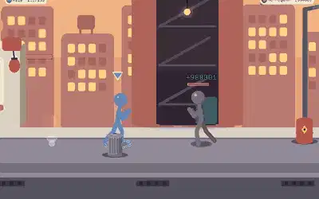
Remplace « Poings et pieds ». 24 coups sans decollage : chaque coup REPOUSSE la cible, le héros court pour la rattraper (c'est la cause de ses pas), poing de la montagne, puis marteau qui l'écrase.
Plus de decollage inexplique ; la camera suit les deux.
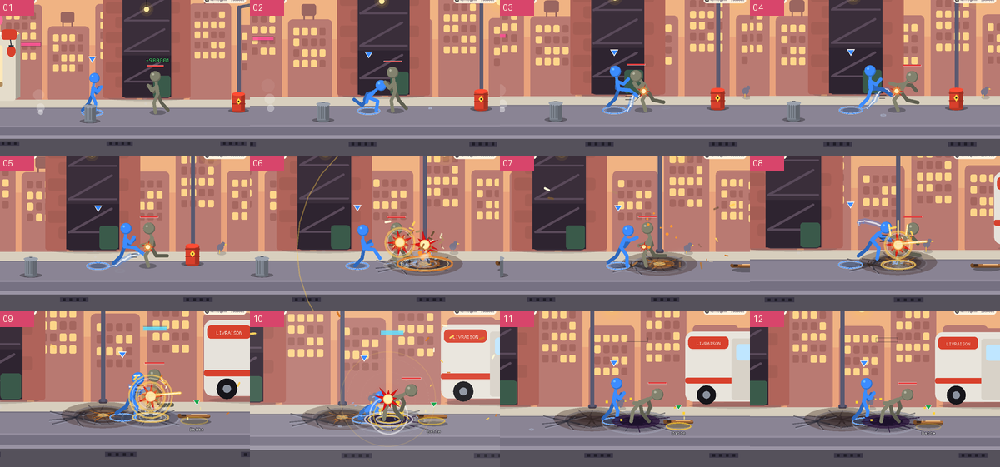
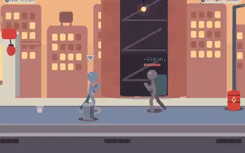
Lanceur, SAUT du héros vers la cible, 18 coups ou chaque impulsion suit la gravite du jeu (paraboles, plus de flottement), piquee.
Gravite : impulsion de 1,5 a 3,4 par coup, g = 0,5 comme le moteur.
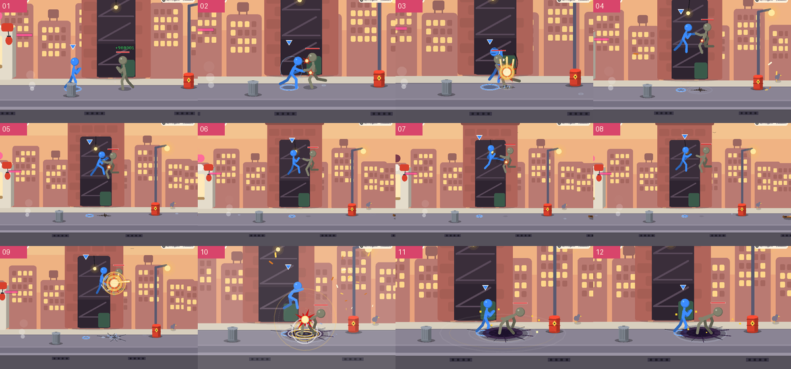
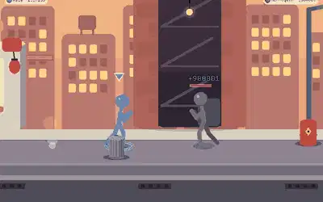
11 coups lents et lourds : chacun ENFONCE la cible dans le sol (fissures qui s'accumulent, anneau, secousse croissante), le héros ne bouge ni ne se retourne.
Cible et lanceur ne bougent plus : tous les coups portent.
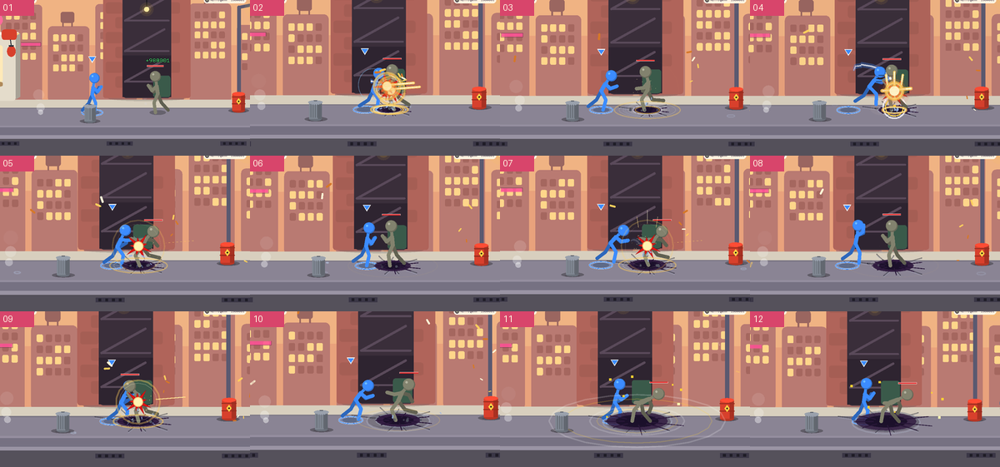
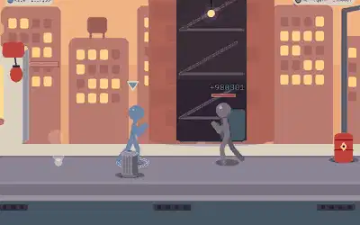
Course d'approche, 30 griffures rapides de la même cote (traces blanches sur la cible), poing de la montagne, marteau final. Jamais de retournement.
Le héros reste du même cote du début a la fin.
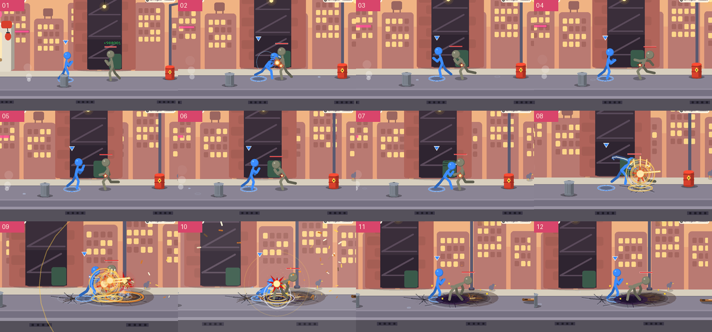
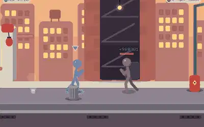
Deux arcs : 1er lanceur, jongle, piquee ; la cible REBONDIT dans le cratere, le héros resaute la reprendre au sommet, 2e jongle, 2e ecrasement plus fort.
Gravite et rebond coherents ; deux sommets lisibles.
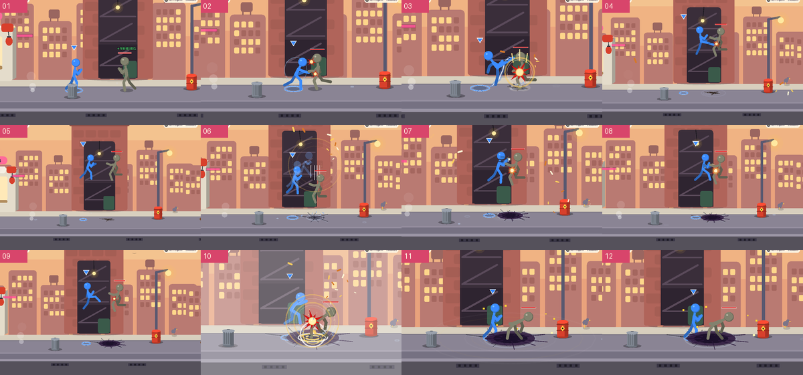
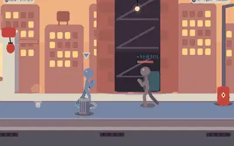
La cible vole a droite : le héros se teleporte DEVANT sa trajectoire (anneaux) et la renvoie a gauche, 10 fois ; puis teleport au-dessus et piquee.
Chaque teleport a une raison : se mettre devant la cible.
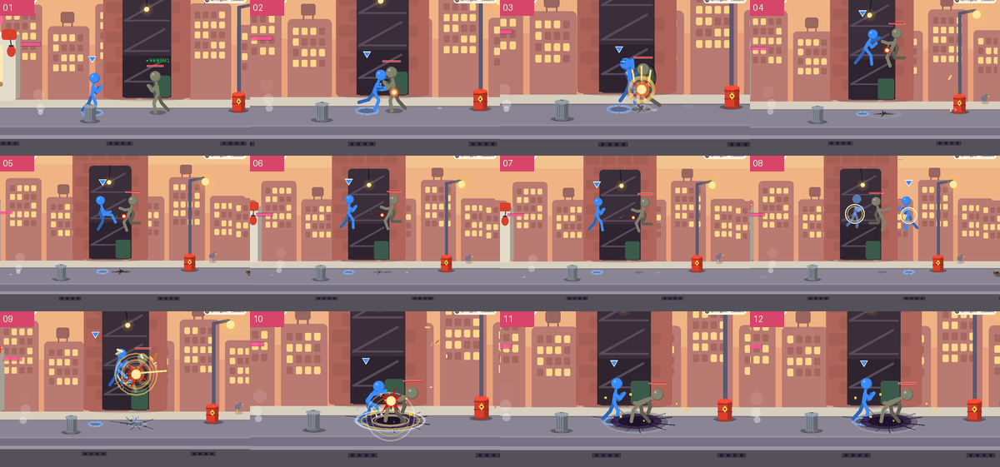
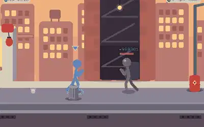
La cible, pliee en deux, est maintenue a hauteur de genou : chaque genou la soulève (gravite) pendant que le héros reste plante au sol ; genou montant final, saut, piquee.
Un seul sens : le genou soulève, le héros ne decolle qu'a la fin.
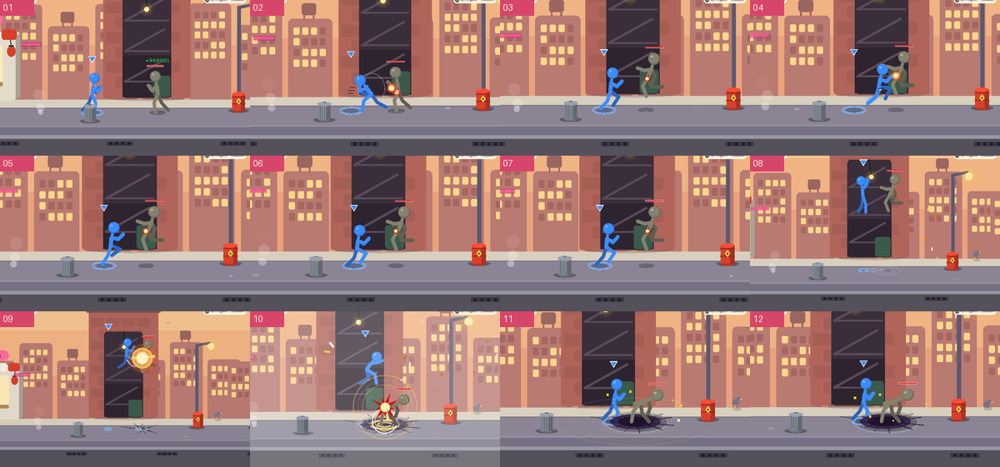
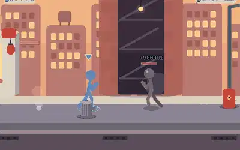
Lanceur très haut, le héros monte AU-DESSUS de la cible, bras en l'air, la lumière se concentre, l'ombre grandit au sol ; piquee, chute au ralenti, impact avec cratere, onde, debris, éclat, secousse, KO net.
On voit qui écrase qui : ombre, chute, cratere.
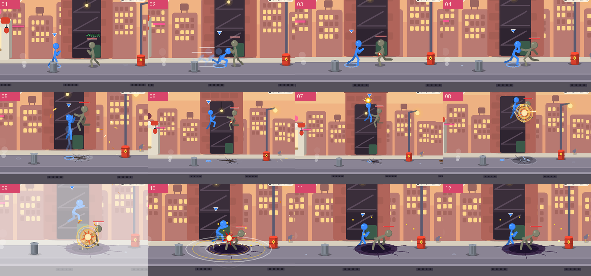
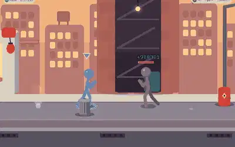
Même montee, même ecrasement, mais la cible REBONDIT dans le cratere et le héros la repile d'un talon : deuxieme impact, plus fort.
Variante a double impact.
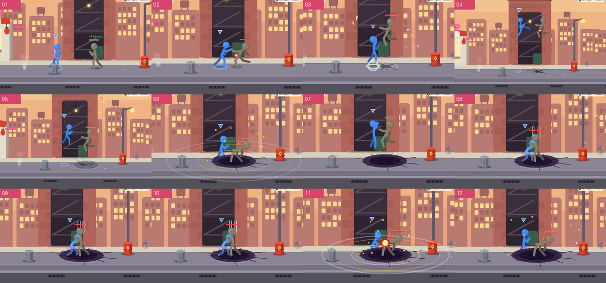
Il traverse la cible de part en part et la frappe AU PASSAGE (contact cale sur la portee du coup), derape de l'autre cote (poussière), se retourne, repart : 14 passes.
Le demi-tour a une cause : le freinage après la passe.
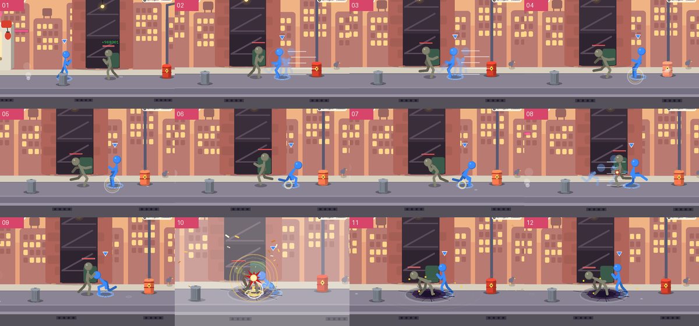
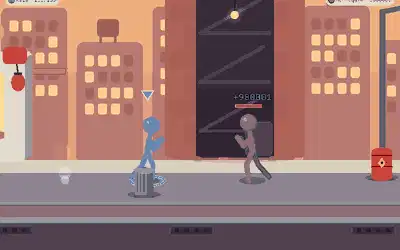
Le héros reste sur place et enchaine les coups tournants ; la cible est maintenue en l'air, TOURNE dans un tourbillon d'anneaux de vent, puis la tornade l'expulse et elle s'écrase.
Cadrage et ciblage corriges : la cible ne quitte pas la portee.
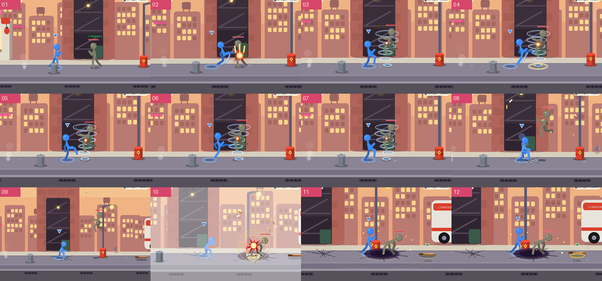
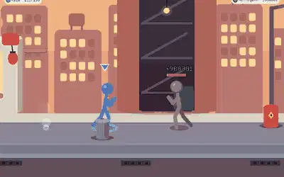
Remplace « Tourbillon de fer ». Chaque coup propulse la cible au ras du sol, le héros COURT derrière elle et la refrappe ; la camera suit. Marteau final.
Distinct des autres : poursuite horizontale, camera qui suit.
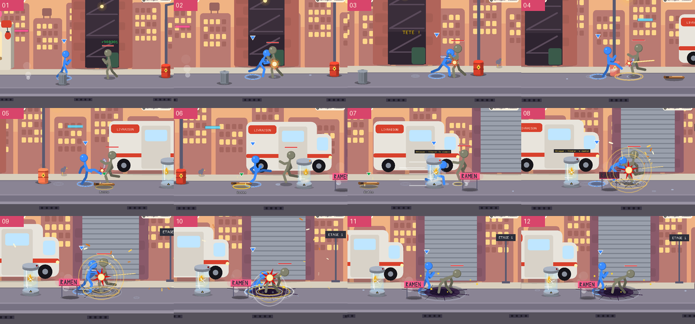
Banc : AFH_PROP2=1 AFH_SCÈNE=prop AFH_PROP=super AFH_PROPV=n ; sources src/propos2.rs, tools/propos2.py. Les supers 01, 02, 04, 11, 14 de la première page n'ont pas été touches.